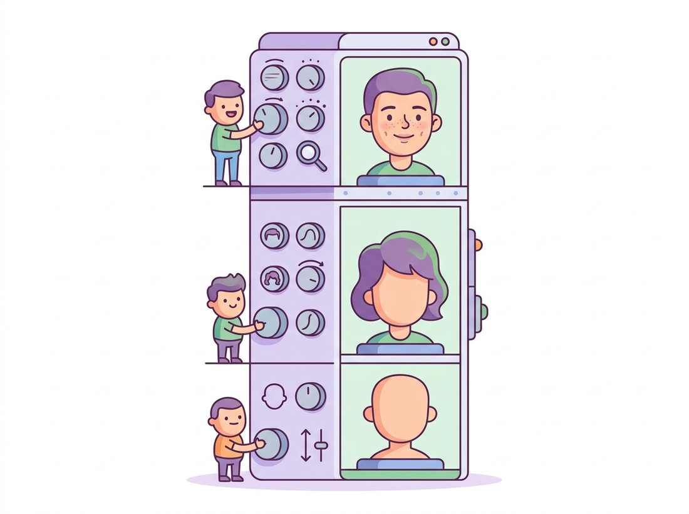

"They gave me a knob for every layer. One for the face shape, one for the hair, one for whether it is raining behind me. I did not ask for this much responsibility, but I will admit the portraits are spectacular."
A Style Vector With Too Many Dials
The leap from grainy low-resolution samples to indistinguishable megapixel faces was not one breakthrough but a lineage of architectural ideas, each fixing the bottleneck the previous one exposed. This section walks that lineage. DCGAN found the convolutional recipe that made GAN training reliable at all. Progressive growing solved the high-resolution instability by training coarse-to-fine. StyleGAN then rethought the generator itself, injecting a learned style vector at every layer through adaptive normalization, separating the random latent from the controllable style, and producing the disentangled W space that turned a generator into an editing instrument. Reading the lineage teaches you not just what works but why each piece was needed.
In Section 32.1 we built a GAN from fully-connected layers, and noted its samples were rough. In Section 32.2 we made training stable. This section is about capacity and control: how the generator's architecture evolved to produce high-resolution, high-fidelity images that you can also steer. The story spans roughly 2015 to 2020 and three landmark papers, and it is one of the clearest examples in deep learning of architecture, not just optimization, driving a capability jump.
1. DCGAN: The Recipe That Made GANs Trainable Beginner
The Deep Convolutional GAN (Radford et al., 2016) was less a new idea than a hard-won set of architectural rules that turned the temperamental original GAN into something a practitioner could reliably train. Its recipe is worth memorizing because variants of it underlie almost every convolutional GAN since. The generator is an all-convolutional network that upsamples a latent vector to an image; the discriminator mirrors it, downsampling an image to a score. The DCGAN rules are:
- Replace pooling with strided convolutions in the discriminator and transposed (fractionally-strided) convolutions in the generator, so both up- and downsampling are learned. These are the same transposed convolutions you used to upsample in the VAE decoder of Chapter 31.
- Use batch normalization (the per-batch activation rescaling of Section 19.4) in both networks (except the generator's output layer and the discriminator's input layer), which keeps activations well-scaled and was essential for deep stacks at the time.
- Remove fully-connected hidden layers; the architecture is convolutional end to end.
- Use ReLU in the generator (with
Tanhat the output) and LeakyReLU in the discriminator, so the discriminator never fully zeroes a gradient.
The transposed convolution is often called "deconvolution", which suggests it mathematically inverts a convolution, recovering the input a forward conv was applied to, the way you might undo the blur of Chapter 7. It does no such thing. A transposed convolution is just another learnable convolution whose stride pattern increases spatial resolution rather than decreasing it; it shares the connectivity structure of a convolution's transpose but has its own independently learned weights and never tries to recover any original signal. Thinking of it as an inverse leads to two real bugs: expecting it to undo a paired downsampling layer (it will not), and being surprised by the regular checkerboard artifacts it produces, which come precisely from overlapping output windows and are usually fixed by upsampling-then-convolving instead. Read it as "a convolution that upsamples", not "a convolution run backward".
Here is a compact DCGAN generator for $64 \times 64$ RGB images, exactly the structure used to produce the famous DCGAN bedroom and face samples.
# DCGAN generator for 64x64 RGB images: project the latent to a 4x4
# feature map, then upsample by 2 with transposed convolutions four times,
# following the DCGAN recipe (batch norm, ReLU, Tanh output).
import torch.nn as nn
class DCGANGenerator(nn.Module):
def __init__(self, latent_dim=100, ngf=64, channels=3):
super().__init__()
self.net = nn.Sequential(
# project the latent vector to a 4x4 feature map, then upsample x2 four times
nn.ConvTranspose2d(latent_dim, ngf * 8, 4, 1, 0, bias=False),
nn.BatchNorm2d(ngf * 8), nn.ReLU(True), # 4x4
nn.ConvTranspose2d(ngf * 8, ngf * 4, 4, 2, 1, bias=False),
nn.BatchNorm2d(ngf * 4), nn.ReLU(True), # 8x8
nn.ConvTranspose2d(ngf * 4, ngf * 2, 4, 2, 1, bias=False),
nn.BatchNorm2d(ngf * 2), nn.ReLU(True), # 16x16
nn.ConvTranspose2d(ngf * 2, ngf, 4, 2, 1, bias=False),
nn.BatchNorm2d(ngf), nn.ReLU(True), # 32x32
nn.ConvTranspose2d(ngf, channels, 4, 2, 1, bias=False),
nn.Tanh(), # 64x64, output in [-1, 1]
)
def forward(self, z): # z shape: (batch, latent_dim, 1, 1)
return self.net(z)Tanh. The discriminator is its mirror image with strided convolutions and LeakyReLU.DCGAN also gave the field its first vivid demonstration that the latent space is structured. Averaging the latent codes of "man with glasses" minus "man without glasses" plus "woman without glasses" decodes to a woman with glasses, the latent-arithmetic result that proved the generator had learned semantically meaningful directions. We exploit exactly this structure for editing in Section 32.5.
2. Progressive Growing: Coarse to Fine Intermediate
DCGAN topped out around $64 \times 64$. Pushing to $1024 \times 1024$ directly was unstable: a high-resolution discriminator can tell real from fake too easily on fine detail, and the generator cannot learn global structure and fine texture simultaneously from scratch. Progressive Growing of GANs (Karras et al., 2018) solved this with a training schedule rather than a new loss. Training begins at $4 \times 4$ with a tiny generator and discriminator. Once that stabilizes, a new layer is faded in to double the resolution, on both networks at once, with the new layer's contribution blended in gradually so the existing weights are not shocked. The process repeats up to the target resolution.
Progressive growing also introduced two small tricks that survived into later models: minibatch standard deviation, an extra discriminator feature that reports the variation across a batch so the discriminator can directly punish the low diversity of mode collapse (the diagnostic we flagged in Section 32.2), and equalized learning rate, which scales weights at runtime so every layer learns at a comparable pace. The result was the first GAN to produce $1024 \times 1024$ faces convincing enough to fool casual viewers.
3. StyleGAN: Style-Based Generation Advanced
StyleGAN (Karras et al., 2019) kept progressive growing's training stability but redesigned the generator around a single question: can we control an image at multiple scales, coarse pose separately from fine texture? Its answer reshaped the field, sketched in the illustration below. Three architectural changes do the work.

A mapping network and the W space. Instead of feeding the latent $\mathbf{z}$ directly into the generator, StyleGAN first passes it through an eight-layer MLP that maps $\mathbf{z} \in Z$ to an intermediate vector $\mathbf{w} \in W$. The motivation is disentanglement: the prior $p_z$ is forced to be a fixed Gaussian, whose round shape cannot match the irregular distribution of real factors of variation, so $Z$ is necessarily entangled. The learned mapping network is free to warp $Z$ into a $W$ space whose geometry better matches the data, and empirically $W$ is far more disentangled. This is the space we will invert into in Section 32.5.
Style injection via adaptive instance normalization (AdaIN). The generator no longer takes a latent as its input at all. It starts from a learned constant $4 \times 4$ tensor, and the style vector $\mathbf{w}$ controls the image by modulating the statistics of every layer's activations. The intuition rests on a finding from style-transfer research: the per-channel mean and variance of a feature map encode its "style" (texture, color mood), so to apply a new style you erase the old statistics and write in new ones. At each layer, the feature map is instance-normalized (each channel set to zero mean and unit variance per image, the instance-normalization variant of Section 19.4), which strips the old style, then rescaled and shifted by a per-channel scale and bias predicted from $\mathbf{w}$, which writes the new one in:
$$ \mathrm{AdaIN}(\mathbf{x}_i, \mathbf{w}) \;=\; \mathbf{y}_{s,i}(\mathbf{w}) \cdot \frac{\mathbf{x}_i - \mu(\mathbf{x}_i)}{\sigma(\mathbf{x}_i)} \;+\; \mathbf{y}_{b,i}(\mathbf{w}), $$
where $\mathbf{y}_s$ and $\mathbf{y}_b$ are affine projections of $\mathbf{w}$. Because the same $\mathbf{w}$ feeds every layer, and because early (low-resolution) layers control coarse attributes while late (high-resolution) layers control fine ones, you can mix two images by using one $\mathbf{w}$ for the coarse layers and another for the fine layers, the celebrated style mixing that copies pose from one face and skin texture from another.
Per-layer noise for stochastic detail. Details with no semantic content (the exact placement of individual hairs, freckles, pores) are injected as explicit per-pixel Gaussian noise added at each layer, scaled by a learned per-channel factor. This frees the style vector from having to encode irreducibly random detail and is why two images with the same $\mathbf{w}$ but different noise differ only in their fine stochastic texture. Figure 32.3.2 contrasts the traditional and style-based generators.
A minimal style block makes the AdaIN mechanism concrete. The full StyleGAN generator stacks many of these at increasing resolution, but the core is just normalize-then-modulate.
# One StyleGAN synthesis layer: convolve, add learned-scale Gaussian noise,
# instance-normalize to strip per-channel statistics, then write new
# statistics back from the style vector w (adaptive instance normalization).
import torch
import torch.nn as nn
import torch.nn.functional as F
class StyleBlock(nn.Module):
"""One StyleGAN-style layer: conv, add noise, then AdaIN modulation from w."""
def __init__(self, in_ch, out_ch, w_dim=512):
super().__init__()
self.conv = nn.Conv2d(in_ch, out_ch, 3, padding=1)
self.noise_scale = nn.Parameter(torch.zeros(1, out_ch, 1, 1)) # learned per-channel
self.to_style = nn.Linear(w_dim, out_ch * 2) # w -> scale and bias
def forward(self, x, w):
x = self.conv(x)
x = x + self.noise_scale * torch.randn_like(x) # per-pixel stochastic detail
x = F.instance_norm(x) # zero mean, unit var per channel
ys, yb = self.to_style(w).chunk(2, dim=1) # styles from the W vector
return ys.unsqueeze(-1).unsqueeze(-1) * x + yb.unsqueeze(-1).unsqueeze(-1)Style mixing exposes one beautifully concrete dial: the layer at which you stop using $\mathbf{w}_A$ and start using $\mathbf{w}_B$. With a pretrained StyleGAN2 from the library shortcut below, generate two faces from codes $\mathbf{w}_A$ and $\mathbf{w}_B$, then re-synthesize while feeding $\mathbf{w}_A$ to the first $k$ synthesis layers and $\mathbf{w}_B$ to the rest, sweeping the crossover $k$ across its whole range (for a $1024 \times 1024$ generator, $k$ from the coarse $4 \times 4$ block up to the finest). Lay the results out as a strip from "all coarse from A" to "all fine from A". Watch which attributes follow the crossover: a low $k$ borrows pose, face shape, and identity from $\mathbf{w}_B$ while keeping A's color and fine texture; a high $k$ keeps B's identity but repaints A's skin tone and micro-texture onto it. The thirty-second payoff is seeing, not just reading, that early layers carry coarse structure and late layers carry fine style, the per-scale separation that the AdaIN injection above buys you. As a second dial, hold the crossover fixed and re-roll only the per-layer noise: the identity and style stay put while only hairs and pores reshuffle.
The single most transferable lesson of StyleGAN is that the point of injection of the latent determines the granularity of control. Inject it once at the input and you get a black box: change the code and the whole image changes unpredictably. Inject a disentangled style at every layer and you get scale-separated control, coarse layers move pose and identity, fine layers move texture and color. This same principle, condition at every layer rather than once, reappears as cross-attention conditioning in the text-to-image diffusion models of Chapter 34, where the text embedding is injected into every block of the U-Net.
StyleGAN2 (Karras et al., 2020) refined this by replacing AdaIN with weight demodulation (folding the style into the convolution weights to remove characteristic "water-droplet" artifacts), dropping progressive growing in favor of a fixed skip-connection architecture, and adding path-length regularization to keep the mapping from $W$ to image smooth. StyleGAN2 is the model most GAN-inversion and editing work of Section 32.5 still builds on. StyleGAN3 then made the generator translation- and rotation-equivariant, removing the "texture sticking" that betrayed earlier models in video.
The "water-droplet" artifacts that StyleGAN2's weight demodulation removed were, for a while, a reliable forensic giveaway: spotting the telltale blob became a parlor trick for telling a StyleGAN1 face from a real one. The arms race is recursive. Each generation of generator erases the tells of the last, and each generation of detector hunts for the new ones. The discriminator of Section 32.1 never really retires; it just changes employers and starts working for the fact-checkers.
You will almost never train StyleGAN from scratch; it takes days on multiple high-end GPUs and a carefully tuned schedule. NVIDIA's stylegan3 repository ships the full StyleGAN2 and StyleGAN3 implementations plus pretrained weights for faces (FFHQ), animals (AFHQ), and more, behind a tiny inference API: loading a pretrained generator and sampling a face is about five lines. Generating an image is img = G(z, c) where z is a latent and c an optional class label; the repository handles the mapping network, the synthesis stack, the noise inputs, and the truncation trick internally, replacing the several thousand lines of the from-scratch generator above.
A startup building a retail analytics product in 2021 needed face imagery for its marketing site and investor deck, but using photographs of real customers raised obvious consent and privacy problems, and stock-photo licenses for the volume they wanted were expensive. The solution was a pretrained StyleGAN2 trained on FFHQ: every face on the site was sampled from the generator and belonged to no real person. The team used the truncation trick (sampling $\mathbf{w}$ vectors pulled toward the mean of $W$) to trade a little diversity for higher average quality, and style mixing to control demographics roughly so the gallery looked representative. The decision saved licensing cost and sidestepped consent entirely, and it taught the team a second lesson the hard way: a handful of early samples had subtle artifacts (asymmetric earrings, a melted background) that StyleGAN2's weight demodulation reduces but does not eliminate, so a human still had to curate the final set. Synthetic data removes one problem and adds a quality-control step; it does not remove the human from the loop.
The StyleGAN lineage did not stop in 2020. StyleGAN-XL (Sauer et al., 2022) scaled the architecture to ImageNet-class diversity by projecting onto pretrained feature spaces, and the 2023 text-to-image GANs StyleGAN-T and GigaGAN (covered in Section 32.6) carried the style-based design into billion-parameter, text-conditioned territory. Meanwhile the AdaIN and style-injection idea propagated outward: it is the conceptual ancestor of the adaptive-normalization conditioning (SPADE, AdaGN) used inside diffusion U-Nets, and the demonstration that a disentangled intermediate latent enables editing directly motivated the latent-manipulation methods that now operate on diffusion models in Chapter 35.
Exercises
StyleGAN argues that the latent space $Z$ is necessarily entangled because the prior is a fixed Gaussian, and that the learned mapping network produces a more disentangled $W$. Explain in your own words why a fixed round Gaussian cannot match an arbitrary distribution of real factors of variation, and why a learned nonlinear map into $W$ can do better. What property of $W$ does the path-length regularization of StyleGAN2 try to preserve, and why does that property matter for editing?
Build a small StyleGAN-style generator by stacking three or four of the StyleBlock modules from this section, with bilinear upsampling between them, starting from a learned constant $4 \times 4$ tensor and a two-layer mapping network from $\mathbf{z}$ to $\mathbf{w}$. Train it on MNIST or FashionMNIST with the WGAN-GP setup from Section 32.2. Then implement style mixing: generate an image using $\mathbf{w}_A$ for the first two blocks and $\mathbf{w}_B$ for the rest, and describe which visual attributes come from which source.
Load a pretrained StyleGAN2 (FFHQ) from the official repository. Sample $\mathbf{w}$ vectors, compute their mean $\bar{\mathbf{w}}$, and implement the truncation trick $\mathbf{w}' = \bar{\mathbf{w}} + \psi (\mathbf{w} - \bar{\mathbf{w}})$ for several values of $\psi \in [0, 1]$. Generate a grid for each $\psi$ and describe the diversity-versus-quality tradeoff you observe. Relate this tradeoff to the mode-coverage discussion of Section 32.2: what is truncation sacrificing, and why is that sometimes a good deal?